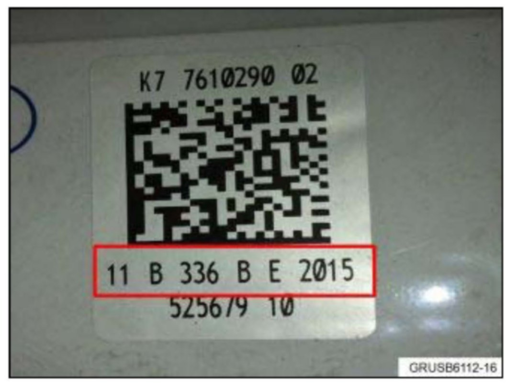
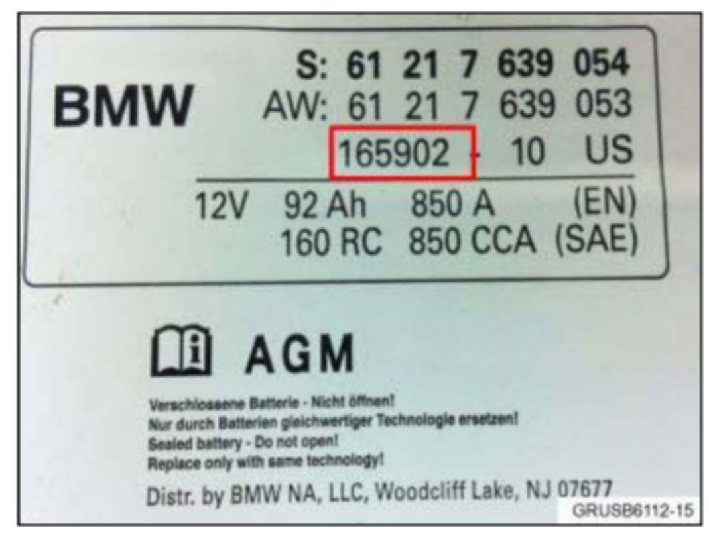

Electrical - Updated Battery Registration Procedure
SI B61 15 12General Electrical Systems
April 2012
Technical Service
SUBJECT
Updated Battery Registration Procedure
MODEL
All
SITUATION
With the release of ISTA (Integrated Service Technical Application) D2.30.6 or later, an updated battery registration test plan has been introduced. The test plan allows the technician to enter a 12-digit "Data Code Matrix" or 6-digit "Supplier Number" that is easily read off the new battery. This will allow for tracking of the new battery in the vehicle, which will improve quality control of replacement batteries.
PROCEDURE
In order to obtain the proper numbers required by the test plan, before installing the replacement battery, note the 12-digit "Data Code Matrix" or 6-digit "Supplier Number" from the new battery. These numbers can be found on top of the battery. The next 2 steps will provide examples of the numbers.

1. The 12-digit "Data Code Matrix" shown in this example is "11B336BE2015" and is a combination of numbers and letters.
Note:
Not all replacement batteries have this code. If this is the case, use the 6-digit code identified in step 2.

2. The 6-digit "Supplier Number" shown in this example is "165902". If this number is entered in the test plan, you also need the numbers stamped on top of the negative post of the battery, for example, "46 11."
3. After the numbers have been obtained and the battery is installed in the vehicle, start diagnosis using ISTA D2.30.6 or later.
4. Select "Identification / Vehicle selection / Read out vehicle data / Start identification." A vehicle test is not necessary in order to perform battery registration.
5. Select "Activities / Service function / 03 Body / Power supply / Register battery change / Start search."
6. Select the test plan "AS6120_WECHSEL - Register battery replacement."
7. Once the test plan starts, select "Register battery replacement."
8. The test plan reads out the current battery that is registered in the vehicle. Select the appropriate entry that applies to the replacement battery:
^ "Enter battery replacement: same capacity"
^ "Enter battery replacement: higher/lower capacity"
^ "Enter battery replacement: Change from normal lead-acid battery to AGM battery"
9. The test plan then asks the question, "Is there a data matrix code on the label of the newly installed battery?"
^ Select "Yes" if the 12-digit code displayed in step 1 is present. After yes is selected. proceed to step 10.
^ Select "No" if the 6-digit code displayed in step 2 is present. After no is selected, proceed to step 11.
Note:
Most replacement batteries only have the 6-digit code on the new battery.
10. The test plan prompts to "Enter second line of data matrix code as described (Note! Upper and lower case sensitive)." Enter the 12-digit code recorded from the new battery in step 1 with no spaces, for example, "11B336BE2015." Select "Next" when finished. The new battery is registered in the vehicle and the test plan can be completed. You are finished.
11. This step should only be performed if "No" was selected in step 9. The test plan prompts to "Enter 6-digit supplier number as described." Enter the 6-digit code recorded from the new battery in step 2, for example, "165902." Select "Next" and proceed to the next step.
12. The test plan prompts to "Enter number of polarity mark without spaces." Enter the 4 digits that were recorded in step 2 from the top of the negative battery post, for example "4611." Select "Next" when finished. The new battery is registered in the vehicle and the test plan can be completed. You are finished.